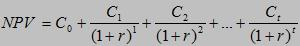

| Guideline: Calculating Net Present Value |
 |
|
| Related Elements |
|---|
OverviewNet Present Value (NPV) is a valuation technique that helps an organization project an investment's potential profitability by discounting future cash flow expectations, and then comparing the sum of these cash flows to the initial capital expenditure required to fund the product. NPV compares the value of a dollar today to the value of that same dollar in the future, taking into account inflation as well as projected returns on investment. NPV is used in capital budgeting to analyze the profitability of an investment or product. Future cash flow must be discounted to perform a comparison of similar entities. For example, $100 (U.S.) today is not the same as $100 in three years. With $100 today, you can earn risk-free compounded interest for three years; therefore, you will have more than $100 at the end of three years. This is why you must discount or remove the interest component from the future cash flow, so that you can put the initial capital investment and future cash flow on a comparable basis. FormulaThe formula for calculating net present value follows. The formula for NPV requires knowing the time period of the investment (t), the discount rate (r), and the cash flow at that specific point in time (C, which represents cash inflow minus cash outflow).  Basically, you are discounting each future cash flow by a Discount Factor to arrive at the present value of each cash flow. The formula then adds each of these values and subtracts the initial investment in the project. ExampleIn this example, we compare two different projects, each with a projected cost of $1 million and a desired rate of return of 10%. Project A is expected to yield $500K per year for a 5-year period. Project B is expected to yield $1 million the first year, $750K the second year, and $500K the third year.
On the basis of absolute (undiscounted) return, Project A is better, because it generates $250,000 more cash over the life of the investment. But when the time value of money is considered, Project B looks slightly better, with an NPV higher by $9,000. Its present value is higher because the returns occur earlier in the project's life. How to use the NPVNPV helps you make sound decisions about whether to accept or reject potential investment projects, based on an objective financial criterion. Generally speaking, an NPV of greater than 0 indicates that the project will add value or represent net savings to the organization. An NPV of less than 0 indicates that the company will be negatively impacted by the project; in other words, the investment will result in a financial loss for the organization. There is a gray area where the NPV is near 0 or at 0. This means that the investment will recuperate only the cost of the capital required to make the investment. In this case, management must decide if there are intangible benefits, such as increased brand awareness or leadership. in bringing a product to market, which would positively affect the company down the road. NPV is definitely a good go or no-go indicator, because normally a company would reject an investment with a negative NPV without further consideration. Even one with a positive NPV should then be evaluated by using additional measures or by taking other factors into account, such as strategic acquisitions, government regulations, risk mitigation, and so on. Strengths and weaknessesStrengths: By considering the time value of money, NPV allows consideration of such things as cost of capital, interest rates, and investment opportunity costs. It is especially appropriate for long-term projects. Weaknesses: Ranking investments by NPV doesn't compare absolute levels of investment. NPV looks at cash flow, not at profits and losses the way accounting systems do. NPV is highly sensitive to the discount rate, and that can be tricky to determine. Also, NPV might not be as useful for IT projects where the benefits often come in the form of cost savings or cost avoidance, rather than clearly defined income. |
||||||||||||||||||||||||||||||||||||||||||||||||||||||
| Concepts |
|---|
Licensed Materials - Property of IBM |